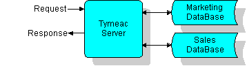
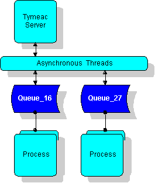
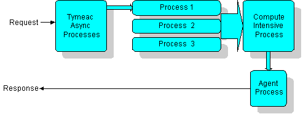
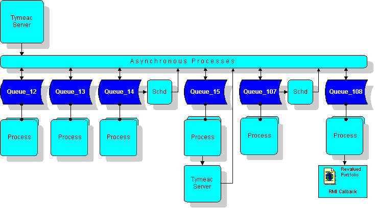

Processing Examples
For the simple request:As a result of the fall marketing campaign, how many customers purchased our new
product This request requires parallel queries to the marketing database and the sales database.

Therefore, invoke the Synchronous Request Method of the Tymeac Server for Function_25 Wait for completion a maximum of four seconds. Pass the response back to the originator.

For the complex request:A customer requires a portfolio revaluation at the earliest possible time but does not This request requires the combined information from three processes as input to a

Therefore, invoke the Asynchronous Request Method of the Tymeac Server for Function_22 When all Queues successfully schedule send an "in progress" message to the
requester When the last Processing Application Class finishes, (the order of which is
irrelevant), Therefore, the Queue_15's Processing Application Class recursively invokes the Function_23 When the Queue schedules successfully the process ends. When the compute intensive process finishes, the Tymeac Queue Thread schedules the

As complicated as this looks it is really a simple process to set up. The Functions and Queues easily construct in the Function and Queue Maintenance
Classes. The Processing Application Classes are small, single purpose Classes that are easy to
write The coordinating, timing, scheduling, monitoring, and managing are handled by Tymeac. The system architect can concentrate on solving business problems.
|
|
© 1998 - 2013 Cooperative Software Systems, Inc. All rights reserved. |